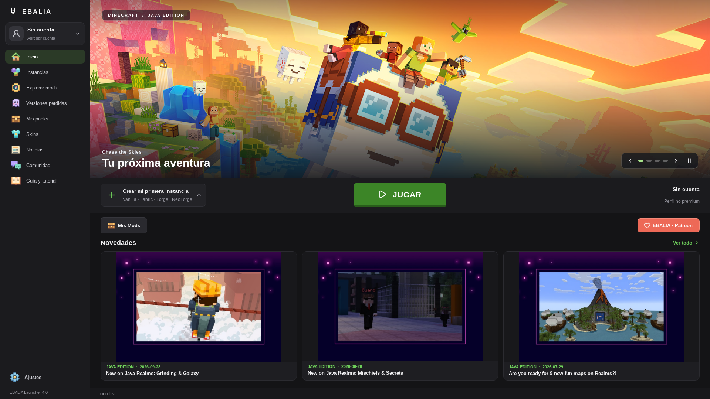

Un lugar para tus mundos
Organizá instancias y explorá modpacks de CurseForge, Modrinth y otras plataformas.
Minecraft, modpacks y versiones perdidas.
Todo en un lugar, con el universo de EBALIA a un clic.

Organizá instancias y explorá modpacks de CurseForge, Modrinth y otras plataformas.
Explorá el archivo de versiones de EBALIA desde una biblioteca visual.
Noticias de Minecraft y Patreon, con publicaciones exclusivas según tu membresía.
Consultando los paquetes publicados…
Windows 10 / 11 · x64
Ver disponibilidad ↗Paquete portátil. Extraé todos los archivos antes de abrir el launcher.Apple Silicon · ARM64
Ver disponibilidad ↗Imagen DMG cuando esté publicada. La compatibilidad Intel requiere una compilación propia.x64 · distribución y dependencias compatibles
Ver disponibilidad ↗Paquete con bibliotecas del sistema: Qt 6 y libarchive. En NixOS, compilá con el flake incluido.No existe un binario probado en todas las distribuciones. El paquete Linux de esta versión se compila en Ubuntu 24.04 y necesita bibliotecas compatibles. El código fuente permite compilar para otras distribuciones con CMake, C++20, Qt 6 y libarchive. Consultá el README antes de instalar.
Los paquetes se muestran cuando terminan las compilaciones y se adjuntan a la versión. Windows y macOS pueden distribuirse sin firma digital. No se incluyen cuentas de Minecraft.
Descubrí mods, novedades y contenido para la comunidad.